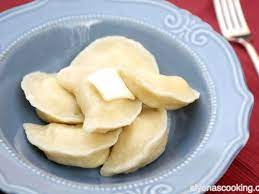
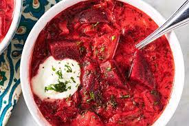
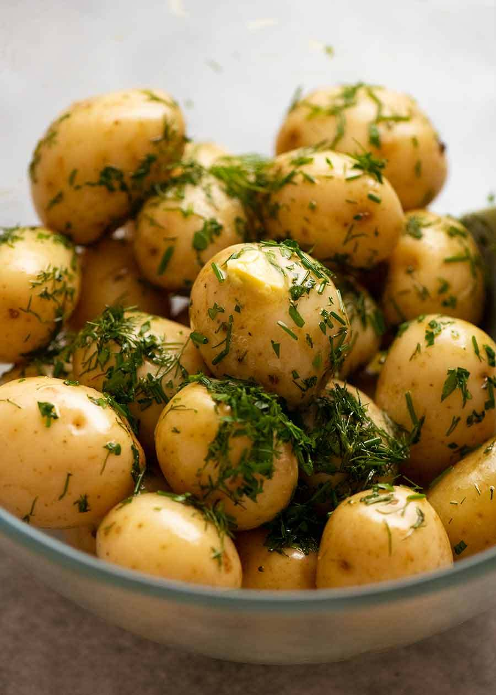

Objectively correct opinions on food
Slavic food tier list.
| Rank | name | justification | example |
|---|---|---|---|
| 1 | vareniki | ubsurd variety (especially compared to pelmeni) |  |
| 2 | Peroshki | fried, softer than clouds, finger food |  |
| 3 | borsht | certified classic, generally agreed apon as pretty alright |  |
| 4 | young potatoes | incredibly filling, so much butter that the US army invades the plate |  |
| 5 | homemade Poppy seed Roullete | literally (metaphorically) drugs | 
|